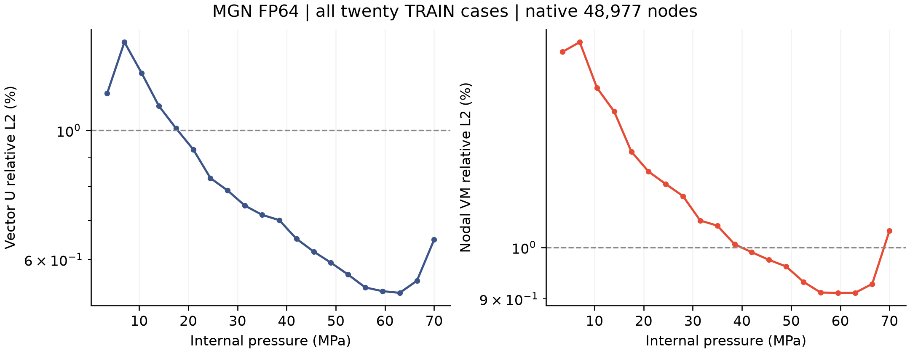
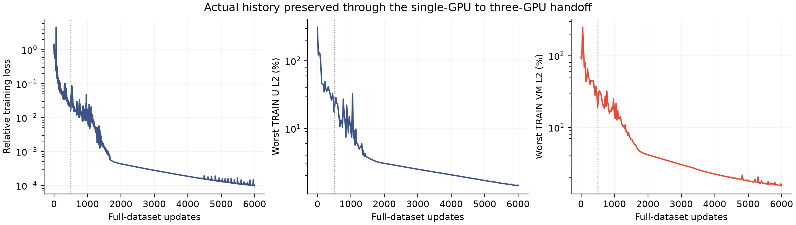
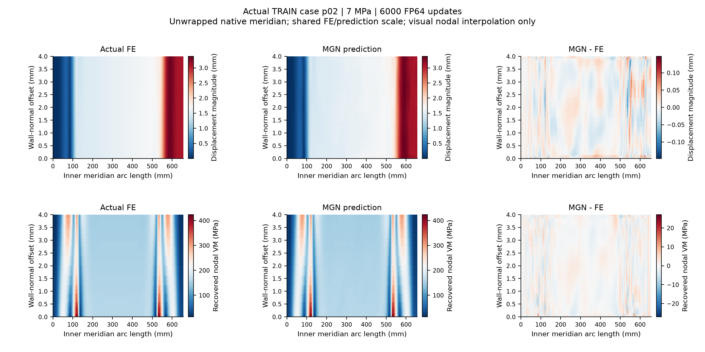
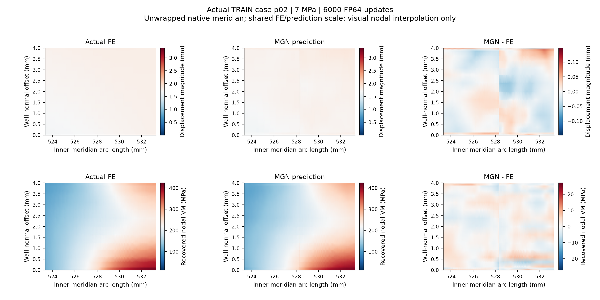

985,540 parameters; 48,977 native nodes; three V100 GPUs with CPU-staged FP64 Gloo SUM.
Worst vector U relative L2: 1.418815%; worst recovered VM relative L2: 1.524387%. All-case 1% target passed: False. Negative-VM cases: 0.
Actual terminal status: budget_exhausted_report_actual_metrics_not_automatic_overfit_pass. Budget completion does not establish an overfit pass. Same homogeneous geometry, pressure-amplitude TRAIN fitting only; no generalization or rated-pressure claim. Negative predictions remain unchanged.

All-case CSV | Vector PDF | Independent verification

Worst case p02, 7 MPa. Display interpolation does not change labels or metrics; no prediction clipping.

